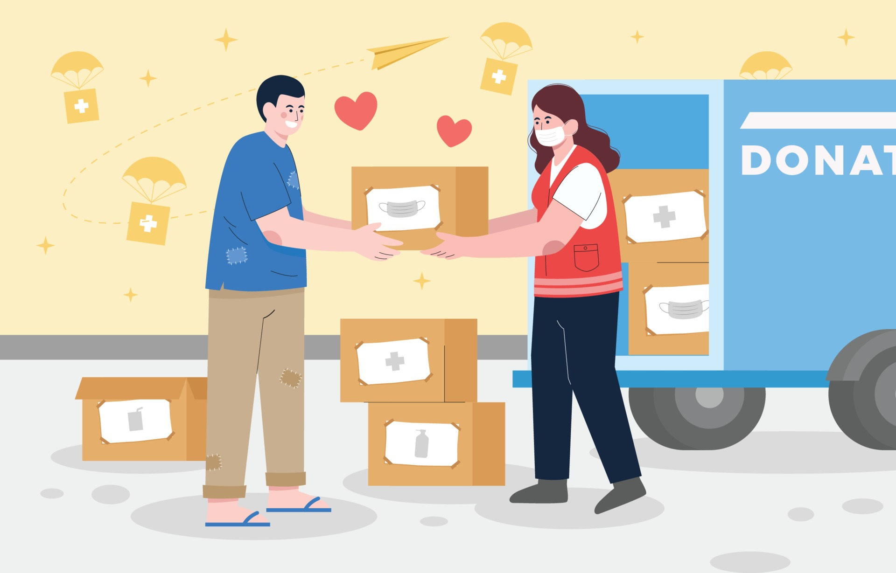

SOCIAL ORGANIZATIONS
Definition
Social organizations are the system, network or even product of social interactions between the different units of society, such as individuals and different groups of people. The interrelationships of people and different social groups, categories and aggregates form the foundation of social organizations. The absence of these basic units and their interactions with each other would take away the soul or the essence of a certain group of people to be called a social organization. To explain further, these organizations are the outcome of the relationship between different groups and parts of society through their minimal or constant interaction with each other.
Roles
Social Netowrking
Social organizations are a means for individuals in society to expand their social network and improve their social networking skills. Whether already acquainted with the different people in the organization or not yet, individuals are given a better opportunity to approach these people and introduce themselves as a friend, possible business opportunity or many more. It is a very effective tool for building, rekindling and improving relationships that were never given the chance to start, previously been broken or lost due to uncontrollable external reasons.

Source of Support
Social organizations also serve as a source of support for some people. Depending on the level of closeness within the social organization, some people like to rely on these organizations for emotional, financial, or even physical support. Some may even call these organizations their family or their second home. Considering that there is usually constant interaction between the members of some organizations, it should follow that relationships within the organization may eventually grow to familial levels that bring with it the loving support they may have for one another.
